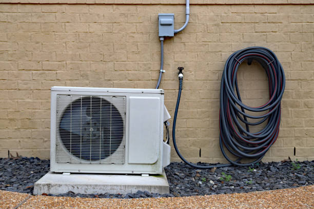

Yancey TX Ductless Mini Split Installation | Established Community HVAC

Yancey, Texas represents a well-established residential community in Medina County where ductless mini split systems provide essential climate control solutions for a mature neighborhood of mid-century homes, established families, and long-term residents who value community stability, quality housing, and reliable home systems that support comfortable living in this desirable location near the Nation's Capital.
Our comprehensive ductless mini split installation, repair, and maintenance services serve Yancey residents with deep understanding of established community needs, from mature home modernization requirements to family-focused comfort priorities, and the specific demands of homeowners who appreciate quality craftsmanship and reliable performance in their well-maintained neighborhood properties.
Mid-Century Modern Community Character
Yancey' distinctive mid-century architecture, featuring post-war housing developments with characteristic ranch-style homes, split-levels, and colonial revivals, creates a unique residential environment where HVAC modernization enhances comfort while preserving the architectural integrity and neighborhood character that makes this community so appealing to families and long-term residents.

Post-War Housing Modernization
Many Yancey homes were built during the post-World War II housing boom with original heating and cooling systems that benefit from modern upgrades. Ductless systems provide excellent solutions for modernizing these homes by offering efficient climate control that integrates seamlessly with mid-century architecture while providing contemporary comfort and energy efficiency standards.
Our installation approach for mid-century homes emphasizes preserving architectural character while providing modern performance through discrete outdoor unit placement, interior installations that complement period design elements, and system configurations that enhance rather than detract from the distinctive mid-century aesthetic that defines this community.
Ranch and Split-Level Adaptations
Yancey' popular ranch and split-level home designs present specific HVAC opportunities where ductless systems excel by providing efficient climate control for open floor plans, managing temperature differences between levels, and offering zone control that optimizes comfort in homes with distinctive architectural layouts that characterize this established neighborhood.
Established Family Community
Yancey' reputation as a stable family community, with many multi-generational residents and established neighborhood relationships, creates HVAC requirements focused on reliability, comfort, and value that support long-term homeownership and family life in this well-regarded residential area that has maintained its appeal across decades.
Multi-Generational Housing Solutions
Many Yancey families include multiple generations or extended family members who require flexible climate control solutions that accommodate varying comfort preferences and health needs. Ductless systems provide ideal solutions for these applications by offering individual zone control that allows different areas to be maintained at optimal conditions for family members of all ages.
Installation approaches for multi-generational homes include strategic zone planning that provides comfort for elderly family members, energy efficiency that manages household expenses, and quiet operation that supports peaceful family environments where different generations share living spaces comfortably and harmoniously.
Long-Term Homeowner Investment
Yancey residents often view their homes as long-term investments requiring quality improvements that enhance comfort while protecting property values. Ductless installations provide excellent investment returns by improving energy efficiency, enhancing comfort, and providing modern technology that appeals to future buyers while supporting current family enjoyment.
Community Stability and Property Values
Yancey' stable property values and desirable location create opportunities for home improvements that enhance both comfort and investment value. Professional HVAC upgrades support the community's continued appeal while providing current residents with improved comfort and efficiency that makes long-term homeownership more enjoyable and cost-effective.
Neighborhood Property Enhancement
Quality HVAC improvements contribute to overall neighborhood appeal by demonstrating homeowner investment and community pride that supports stable property values. Ductless installations often enhance curb appeal through modern, efficient outdoor units while providing interior comfort improvements that make homes more attractive and functional.

Real Estate Market Competitiveness
Modern HVAC systems enhance home marketability in Yancey' competitive real estate environment by providing energy efficiency, advanced technology, and reliable performance that appeals to discriminating buyers while supporting successful property transactions and long-term value appreciation in this established community.
Metropolitan Accessibility with Suburban Benefits
Yancey' strategic location provides excellent access to San Antonio employment centers while offering suburban living advantages including established neighborhoods, community amenities, and family-friendly environments. This balance creates HVAC requirements that support both professional lifestyles and family comfort needs.
Commuter Lifestyle Support
Professional residents who commute to San Antonio and surrounding employment centers require reliable HVAC systems that provide consistent comfort while managing energy costs effectively. Ductless systems support commuter lifestyles by offering programmable controls, energy efficiency, and reliable operation that ensures home comfort regardless of daily schedules.
Home Office and Remote Work Applications
The growing trend toward remote work and home offices in Yancey creates demand for precise climate control in dedicated work spaces, converted rooms, and home office areas. Ductless systems provide ideal solutions for these applications by offering zone control that maintains optimal comfort in work areas while managing energy consumption throughout the home.
Educational Excellence and Family Focus
Yancey' proximity to quality educational institutions and family-focused community amenities attracts families who prioritize children's education and community involvement. These family priorities create HVAC requirements that emphasize comfort, reliability, and cost management that supports successful family life and community engagement.
Study and Learning Environment Support
Optimal indoor climates support student success by providing comfortable environments for homework, study, and educational activities. Ductless systems excel in these applications by offering quiet operation, precise temperature control, and zone management that creates ideal learning environments while managing energy costs within family budgets.
After-School and Activity Space Climate Control
Family homes often serve as gathering places for children's activities, study groups, and community events that require flexible climate control. Ductless systems provide the adaptability needed to maintain comfort during varying occupancy levels while providing energy efficiency that supports active family lifestyles and community involvement.
Mature Landscaping and Environmental Stewardship
Yancey' established neighborhoods feature mature landscaping, tree-lined streets, and environmental awareness that align with efficient ductless technology benefits. These systems support environmental stewardship while providing excellent performance in settings enhanced by natural shade and established vegetation.
Landscape-Integrated Installations
Mature landscaping in Yancey provides opportunities for discrete outdoor unit installation that integrates with established gardens, mature trees, and designed landscapes. Our installation practices preserve valuable vegetation while ensuring optimal system performance and maintaining the neighborhood's attractive environmental character.
Environmental Efficiency Benefits
High-efficiency ductless systems support Yancey residents' environmental awareness by providing exceptional energy efficiency that reduces environmental impact while delivering superior comfort. These systems often exceed traditional HVAC efficiency while supporting community environmental stewardship goals and individual sustainability priorities.
Senior Community Services and Accessibility
Yancey' established community includes many senior residents who require reliable HVAC systems that provide consistent comfort, easy operation, and dependable performance. Ductless systems offer particular benefits for senior residents through user-friendly controls, quiet operation, and reliable performance that supports aging in place.
Senior-Friendly Technology
Modern ductless systems include user-friendly controls and reliable operation that particularly benefit senior residents who value simplicity and dependability. Remote controls, programmable settings, and consistent performance provide convenience and peace of mind for older residents who want reliable home comfort without complexity.
Health and Comfort Considerations
Precise temperature control and advanced air filtration benefits support senior health and comfort by maintaining optimal indoor conditions and air quality. These features are particularly valuable for older residents who may have health considerations that benefit from consistent, comfortable indoor environments and improved air quality.
Healthcare and Medical Services
Yancey' healthcare facilities and medical services require precise climate control that maintains patient comfort while supporting medical equipment operation and maintaining professional environments. These facilities benefit from the reliability and precision control offered by ductless technology for successful healthcare delivery.
Medical Office Climate Control
Medical and dental offices require precise temperature control to maintain patient comfort while protecting sensitive medical equipment and maintaining sterile conditions. Ductless systems provide the reliability and precision needed for medical applications while offering quiet operation that enhances patient comfort and professional atmospheres.
Senior Care Facility Applications
Senior care facilities and assisted living services require reliable climate control that maintains optimal conditions for elderly residents while managing operational costs effectively. Ductless systems provide the performance and efficiency needed for successful senior care operations while supporting resident comfort and health.
Small Business and Professional Services
Yancey' small business community serves local residents with retail stores, professional services, and healthcare facilities that require reliable climate control for customer comfort and business success. These applications benefit from the efficiency and reliability of ductless technology for competitive business operations.
Professional Services Climate Solutions
Accounting firms, insurance offices, real estate agencies, and other professional services require climate control that provides client comfort while supporting professional atmospheres. Ductless systems provide the reliability, quiet operation, and precise control needed for successful professional service delivery in competitive markets.
Retail and Personal Services
Beauty salons, barbershops, small retail stores, and personal services require climate control that provides customer comfort while managing operational costs effectively. Ductless systems excel in these applications by offering precise control, energy efficiency, and reliable operation that supports successful small business operations.
Community Centers and Religious Institutions
Yancey' community facilities including churches, community centers, and recreational facilities require reliable climate control that provides comfort for congregants and participants while managing operational costs within community budgets. These facilities benefit from the efficiency and reliability of ductless technology.
Religious Institution Climate Control
Churches and religious facilities require climate control systems that provide congregant comfort during services and events while managing energy costs within religious organization budgets. Ductless systems excel in these applications by offering zone control and energy efficiency that supports successful religious community operations.
Community Event Space Management
Community centers and event spaces require flexible climate control that can adapt to varying occupancy levels and diverse activities while providing energy efficiency that supports successful community programming within budget constraints. Ductless systems provide the adaptability and performance needed for successful community facility operations.
Energy Efficiency and Cost Management
Yancey families often prioritize energy efficiency and cost management that align perfectly with ductless technology benefits. High-efficiency systems provide significant utility cost savings while offering superior comfort and convenience that enhances quality of life for established homeowners and families.
Utility Cost Reduction
Modern ductless systems provide exceptional energy efficiency that significantly reduces utility costs for Yancey families while providing superior comfort. These savings are particularly valuable for established homeowners who want to manage household expenses while maintaining optimal home comfort for family enjoyment.
CPS Energy Energy Programs
Potomac Electric Power Company (CPS Energy) serves Yancey with various energy efficiency programs that can help offset the cost of high-efficiency ductless systems. We assist customers with rebate applications and ensure installations meet program requirements to maximize available incentives while supporting regional energy efficiency goals.
Indoor Air Quality and Family Health
Yancey families benefit from advanced air filtration and indoor air quality management integrated with ductless systems. These features support family health while providing excellent climate control performance that enhances comfort and well-being for residents of all ages.
Family Health Support
Advanced air cleaning technologies integrated with ductless systems provide particular benefits for families by removing allergens, pollutants, and contaminants while maintaining optimal indoor air quality that supports respiratory health and overall family wellness throughout the home environment.
Allergy and Asthma Management
Sophisticated air filtration capabilities help family members with allergies or asthma by removing triggers and maintaining optimal indoor air quality conditions that support respiratory health while providing superior comfort throughout the home during all seasons.
Seasonal Climate Adaptation
Yancey' Mid-Atlantic climate with extremely hot summers and cold winters requires HVAC systems that provide efficient performance across all seasonal conditions. Ductless heat pump technology excels in these applications by providing efficient cooling and heating while adapting to seasonal weather variations.
Summer Cooling Performance
Texas's extremely hot summers require efficient cooling systems that can maintain comfortable indoor conditions while managing energy costs effectively. Ductless systems provide superior cooling performance while offering humidity control that enhances comfort and supports family activities during challenging summer weather conditions.
Winter Heating Reliability
Cold winter temperatures require reliable heating systems that provide consistent comfort while operating efficiently. Modern ductless heat pumps include advanced technology that maintains excellent heating performance even during cold weather while providing energy efficiency that supports cost management throughout the heating season.
Emergency Service and Community Support
Established communities like Yancey require reliable emergency service capabilities to address HVAC issues quickly and effectively. Our 24/7 emergency service includes rapid response capabilities and comprehensive repair expertise that minimizes disruption to family life and community activities.
Family Emergency Response
Emergency service for Yancey families includes understanding of family schedules and community priorities while providing rapid response when HVAC emergencies threaten home comfort and family activities. We prioritize family safety and comfort while providing professional emergency repair services.
Community Service Commitment
Our commitment to the Yancey community includes supporting local families and businesses through reliable service, community involvement, and professional expertise that contributes to the neighborhood's continued appeal and stability for current and future residents.
Technology Integration and Modern Convenience
Modern ductless systems integrate smart technology that provides enhanced convenience, energy management, and remote monitoring capabilities that support contemporary family lifestyles while offering advanced features that enhance comfort and efficiency for Yancey residents.
Smart Home Integration
Smart ductless systems allow Yancey residents to integrate climate control with other home automation systems, providing comprehensive home management capabilities that enhance convenience while optimizing energy usage and comfort throughout the home environment.
Remote Monitoring Benefits
Advanced monitoring capabilities help Yancey residents track system performance and energy usage while providing remote control capabilities that enhance convenience for busy families and support optimal system performance through proactive monitoring and maintenance alerts.
Long-Term Value and Investment Protection
Yancey properties represent significant family investments that benefit from professional HVAC systems to protect value and ensure reliable operation. Ductless systems provide excellent investment protection by offering efficient operation, advanced technology, and reliable performance that enhances property appeal and supports long-term homeownership success.
Home Investment Enhancement
Professional HVAC systems enhance home values in Yancey' stable real estate market by providing modern efficiency, advanced technology, and reliable performance that appeals to discriminating buyers while supporting successful property ownership and long-term value appreciation in this established community.
Contact us today at (888) 918-9104 to schedule your consultation and discover how specialized ductless mini split systems can enhance comfort, efficiency, and value in your Yancey property. Our experienced team understands the unique requirements of established residential communities and family-focused neighborhoods, and we're ready to provide expert guidance for all your heating and cooling needs in welcoming Yancey, Texas.
Get Your Yancey TX Quote
Specialized ductless mini split services for established residential communities throughout Yancey and Medina County.
Schedule Your Yancey Service
Call (888) 918-9104 for family-focused ductless mini split services in Yancey, TX.